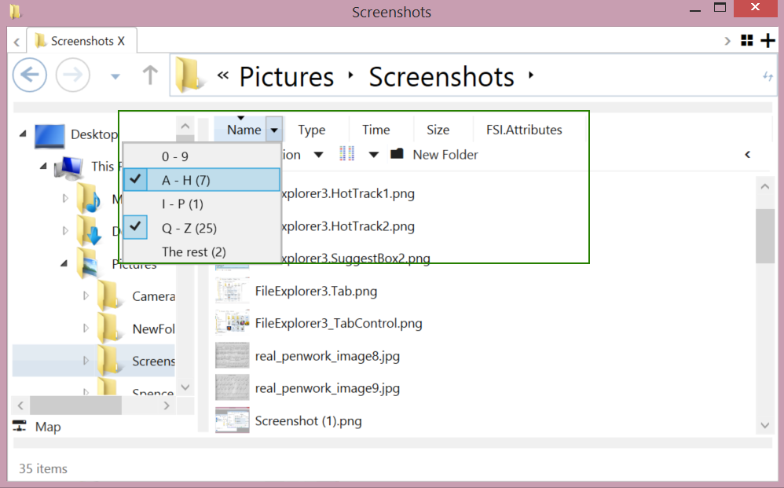
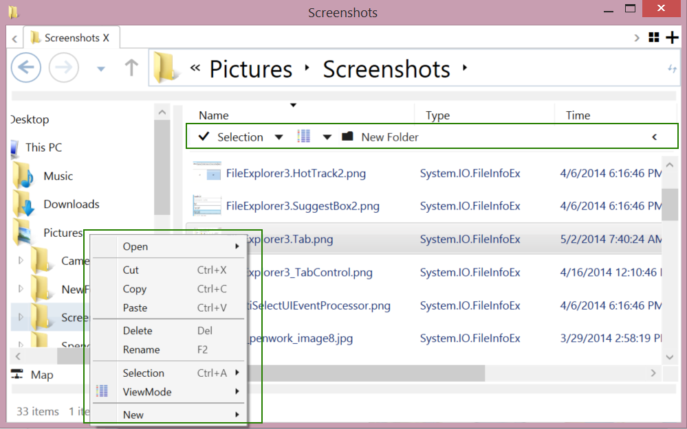

The FileExplorer project is a WPF based control
that implements most aspects of Windows Explorer. It can be used
to display shell objects or any hierarchical data.
The code presented here implements:
The FileExplorer control is designed such that it can be embeded into the UI of other application that you might develop.
I have created the first edition of WPF FileExplorer
in 2008. This version just included a DirectoryTree
and FileList, which delivered a lot of functionality
required (but not provided by the framework). The next version, FileExplorer2,
arrived in 2010. It supported different entity types, more
controls, and improved performance through asynchronous
loading (not using the async keyword) and bounty
directory tree lookup.
The FileExplorer2 version was a real progress in
the matter of implementing a custom file explorer control. But the
problem of this implementation was that it is designed as a demo
that has no room for customization. The design of FileExplorer2
has a tower of hierarchy,
which makes it impossible to improve afterwards.
I recreated the 3rd version FileExplorer3 from
scratch in spring 2014. This version provides more controls,
supports different entry
types in the same explorer, is enabled for touch, and can be
customized. This article is focused on the FileExplorer3
project and describes its usage.
Features:
Note: Touch Drag n Drop support does not work in the shell, unless it is initialized. You can initialize this with a touch and hold (for 2 seconds) gesture before you start to drag.
The following table gives an overview on the different
FileExplorer versions and their features.
| |
|||
| |
|
|
|
| |
|
|
|
DirectoryTree FileList |
|||
NavigationBreadcrumbSidebarStatusbar |
|
||
TabControl ToolWindow |
|
|
|
FilePicker DirectoryPicker |
|
|
|
| |
|
|
|
|
|
|
||
|
|
|||
| |
|
|
|
| |
|
||
| |
|||
EntriesHelper |
|||
FileExplorer3 is released under MIT License
and is available here:
Note: The MIT license is less restrictive than LGPL and
MS-PL. Users can modify the library without making them
open source.
The FileExplorer3 project supports omline directories, such as,
OneDrive or DropBox. These services require identification keys
which are not included in the source code. You therefore, have to
copy Copy Of AuthorizationKeys.cs (in TestApp.WPF)
to AuthorizationKeys.cs in order to use OneDrive or
DropBox. You can enable the GoogleDrive implementation if you
obtain your gapi_client_secret.json and put it in
TestApp.WPF project directory. Please review the Copy of
AuthorizationKeys.cs file to find more information with
regard to obtaining these keys.
if (System.IO.File.Exists("gapi_client_secret.json"))
//For demo only, one should embed it in the binary in real world application.
using (var gapi_secret_stream = System.IO.File.OpenRead("gapi_client_secret.json"))
{
_profileGoogleDrive = new GoogleDriveProfile(_events, _windowManager, gapi_secret_stream);
}
FileExplorer uses Caliburn MicroMVVM framework internally , so
depending whether you are using this framework, you still need
to boot it's BootStrapper. In most case you can use the
included one:
<Application x:Class="Nuget.FileExplorer.WPF.App"
xmlns="http://schemas.microsoft.com/winfx/2006/xaml/presentation"
xmlns:x="http://schemas.microsoft.com/winfx/2006/xaml"
xmlns:uc="http://www.quickzip.org/UserControls"
StartupUri="MainWindow.xaml">
<Application.Resources>
<ResourceDictionary>
<ResourceDictionary.MergedDictionaries>
<ResourceDictionary>
<uc:FileExplorerBootStrapper x:Key="boot" />
</ResourceDictionary>
</ResourceDictionary.MergedDictionaries>
</ResourceDictionary>
</Application.Resources>
</Application>
The FileExplorer3 implementation is based on the Caliburn
Micro framework. You can use the ExplorerViewModel
or TabbedExplorerViewModel(for multi-tab
explorer) and the framework finds the View automatically. The
following code is, for example, in TestApp.WPF, AppViewModel.cs,
line 110:
_windowManager.ShowWindow(new ExplorerViewModel(_events, _windowManager, RootModels.ToArray()));
This code uses the WindowManager in CaliburnMicro
to show an explorer window. The Caliburn Micro framework finds the
appropriate view (ExplorerView in this case) automatically. The
association between view and viewmodel is imported in AppBootstrapper.cs
using MEF.
container = new CompositionContainer(
new AggregateCatalog(
AssemblySource.Instance.Select(x => new AssemblyCatalog(x))
.OfType<ComposablePartCatalog>()
.Concat(new ComposablePartCatalog[] { new DirectoryCatalog(".") }))
);
The automatic association of CaliburnMicro requires that all
views are stored in FileExplorer3's View directory, using a naming
convention based on {ViewModelName}View.xaml. The tool window
(Explorer.ToolWindow.xaml) does not adhere to this rule since you
can create it by passing a "ToolWindow" as context in the ShowWindow():
_windowManager.ShowWindow(new ExplorerViewModel(
_events, _windowManager, RootModels.ToArray()), "ToolWindow");
You would want the ExplorerView to be part of your
UI in most cases. This can be done by specifying the context with
the cal:View.Context attached property.
<ContentControl Name="Explorer" DockPanel.Dock="Left" cal:View.Context="ToolWindow" />
The project includes also a FilePicker and DirectoryPickerViewModelas
well.
var filePicker = new FilePickerViewModel(_events, _windowManager, FileFilter,
FilePickerMode.Open, RootModels.ToArray());
if (_windowManager.ShowDialog(filePicker).Value)
{
MessageBox.Show(String.Join(",", filePicker.SelectedFiles.Select(em => em.FullPath)));
}
//or...
new ScriptRunner().Run(new ParameterDic(),
ScriptCommands.OpenFile(_windowManager, _events, RootModels.ToArray(), FileFilter, "demo.txt",
(fpvm) => ScriptCommands.MessageBox(_windowManager, "Open", fpvm.FileName), ResultCommand.OK));
A user of the Explorer UserControl may has to initialize many
fields before it can start. This can be done by using the ExplorerInitializer,
which is reusable among all tabs in TabbedExplorerViewModel.
public static IExplorerInitializer getInitializer(IWindowManager windowManager,
IEventAggregator events, IEntryModel[] rootModels, params IViewModelInitializer<IExplorerViewModel>[] initalizers)
{
var retVal = new ExplorerInitializer(windowManager, events, rootModels);
retVal.Initializers.AddRange(initalizers);
return retVal;
}
...
var initializer = getInitializer(_windowManager, _events, RootModels.ToArray(),
new BasicParamInitalizers(_expandRootDirectories, _enableMultiSelect, _enableDrag, _enableDrop),
new ColumnInitializers(),
new ScriptCommandsInitializers(_windowManager, _events, profiles),
new ToolbarCommandsInitializers(_windowManager));
var sr = new ScriptRunner();
sr.Run(Explorer.NewWindow(initializer, context, null), new ParameterDic());
You can also use the Explorer UserControl without
the Caliburn Micro framework. Just use the Explorer
UserControl and toggle properties with its ViewModel. A sample
code for this is, for example, in ToolWindow.xaml:
<Window ...
xmlns:uc="http://www.quickzip.org/UserControls"
xmlns:conv="http://www.quickzip.org/Converters"
xmlns:cal="http://www.caliburnproject.org" ...>
<Grid>
<Grid.Resources>
<conv:EntryModelToStringConverter x:Key="emts" />
</Grid.Resources>
....
<!-- This is required to show dragging items -->
<AdornerDecorator x:Name="PART_DragDropAdorner" Grid.ColumnSpan="3" />
<uc:Explorer x:Name="explorer" Mode="ToolWindow" /> <!-- Explorer in tool window mode -->
...
<StackPanel ...>
<bc:UIEventAdapter.Processors>
<bc:DragDropLiteEventProcessor />
</bc:UIEventAdapter.Processors>
...<!--ViewModel.FileList.Selection.SelectedItems is IEntryModel-->
<TextBlock Text="{Binding ViewModel.FileList.CurrentDirectory,
Converter={StaticResource emts},
ElementName=explorer}" />
...<!--ViewModel.FileList.Selection.SelectedItems is List<IEntryViewModel>-->
<TextBlock Text="{Binding ViewModel.FileList.Selection.SelectedItems,
Converter={StaticResource emts},
ElementName=explorer}" />
...<TextBlock x:Name="testDroppable"
AllowDrop="True"
Text="{Binding Label}" >
<bc:UIEventAdapter.Processors>
<bc:DragDropEventProcessor EnableDrag="false" EnableDrop="true" />
<bc:DragDropLiteEventProcessor EnableDrag="false" EnableDrop="true"
EnableMouse="False" EnableTouch="True" />
</bc:UIEventAdapter.Processors>
</TextBlock>
</StackPanel>
</Grid>
</Window>
In either way, you will have to specify the root directory in IEntryModel.
This can be parsed from the profile:
(IProfile provide FileExplorer to access the content of IO,
WebStorage, or other store defined by user)
var _profileEx = new FileSystemInfoExProfile(events, windowManager);
rootDir = _profileEx.ParseAsync(System.IO.DirectoryInfoEx.DesktopDirectory.FullName).Result;
There is a profile for each file system/directory service:
FileSystemInfoProfile, - Access using System.IO
namespaceFileSystemInfoExProfile, - Access using DirectoryInfoEx
librarySkyDriveProfile, - Access Microsoft OneDrive
storage using Microsoft.Live libraryDropBoxProfile , - Access DropBox using DropNet
libraryGoogleDriveProfile. Access Google Drive
using gapi libraryThe web based profiles require a login and password. Please check
the demo (and 'Using the Code' section) if you look for a 'how to'
on this. It is possible to include or remove an online directory
service into the UI interface by using the Map or Unmap
button, respectively
The WPF UIEventHub control registers a number of
events and distributes them to registered elements: UIEventProcessor,
available UIEventProcessor
included MultiSelectEventProcessor
and DragDropEventProcessor,
which is an update for the SelectionHelper and FileDragDropHelper
static class in FileExplorer2.
The documentation for UIEventHub is available here
You can disable the the map/unmap function altogether, if you
don't want to use these online APIs at all. You can find the TestApp.WPF
calls to the ScriptCommandsInitializers and ToolbarCommandsInitializers
in the TabWindow() method.
var profiles = new IProfile[] {
_profileEx,
//Comment these if you don't need them.
_profileSkyDrive, _profileDropBox, _profileGoogleDrive
};
var initializer = getInitializer(_windowManager, _events, RootModels.ToArray(),
...
new ScriptCommandsInitializers(_windowManager, _events, profiles),
new ToolbarCommandsInitializers(_windowManager));
var tabVM = new TabbedExplorerViewModel(initializer);
_windowManager.ShowWindow(tabVM);
In ScriptCommandsInitializers.InitalizeAsync()
if (_profiles.Length > 0)
explorerModel.DirectoryTree.Commands.ScriptCommands.Map =
Explorer.PickDirectory(initilizer, _profiles,
dir => Explorer.BroadcastRootChanged(RootChangedEvent.Created(dir)),
ResultCommand.NoError);
And in ToolbarCommandsInitializers, you can find the following
explorerModel.DirectoryTree.Commands.ToolbarCommands.ExtraCommandProviders = new[] {
new StaticCommandProvider(
...
new CommandModel(ExplorerCommands.Map) {
Symbol = Convert.ToChar(0xE17B),
IsEnabled = true,
IsHeaderVisible = false, IsVisibleOnToolbar = true
},
new CommandModel(ExplorerCommands.Unmap) {
Symbol = Convert.ToChar(0xE17A),
IsVisibleOnMenu = true,
IsVisibleOnToolbar = true
}
You can remove these calls to disable the map functionality.
You can implement the IProfile interface to display
your own hierarchy information.
The IProfile interface includes:
CommandProvider (provide CommandModel),PathHelper (System.IO.Path replacement),HierachyComparer (Compare Hierarchy of two IEntryModels),MetadataProvider(provide MetadataModel),
andDragDrop (Drag and drop support).The Parse and Listing (IProfile.Parse/ListAsync())
methods can be used to return 1 or multiple IEntryModels.
An
IEntryModel includes only basic properties, but your
implementation can define more properties (e.g. Size) since these
are defined by user of the interface. The columns in FileList
are fully customizable and cannot be hard-coded.
You can display different types of information in the sidebar
or statusbar based on the currently selected item:
public enum DisplayType { Auto, Text, Number, Link, DateTime, TimeElapsed, Kb, Percent, Filename, Boolean, Image }
//These are defined in FileExplorer.WPF\Themes\Common\DisplayTemplatex.xaml
//Auto - (Default) Determine automatically depend on type of value
//Text - Given a string, display text.
//Number - Given a int/float, display ###,###,###,##0.##
//Link - Given a text, display Hyperlink
//DateTime - Given a DateTime, display "yyyy/MM/dd HH:mm:ss" editable in Converters.xaml
//TimeElapsed - Given a TimeSpan, display xx years xx days zz hours
//Kb - Given a long, display 12.34kb (also support Mb and Gb)
//Percent - Given a short, display Percentage bar
//Filename - Given a FilePath string, display FileName only
//Boolean - Given a boolean, display a CheckBox
//Image - Given an url or ImageSource, display a image.
/*
FileBasedMetadataProvider is defined in FileSystem.IO, you can include your own MetadataProvider using the explorer view model.
e.g. explorerViewModel.Sidebar.Metadata.ExtraMetadataProviders = new [] {
new DummyMetadataProvider()
};
*/
public class FileBasedMetadataProvider : MetadataProviderBase
{
public override async Task&l;IEnumerable<imetadata>> GetMetadataAsync(IEnumerable<IEntrymodel> selectedModels,
int modelCount, IEntryModel parentModel)
{
...
if (selectedModels.Count() > 0)
{
...
//Display "Creation Time : 3 years 6 months 2 days ago" in sidebar
retList.Add(new Metadata(DisplayType.TimeElapsed, MetadataStrings.strCategoryInfo,
MetadataStrings.strCreationTime, creationTime.ToLocalTime()) { IsVisibleInSidebar = true });
//Display "Size : 1234kb" in sidebar.
retList.Add(new Metadata(DisplayType.Kb, MetadataStrings.strCategoryInfo,
MetadataStrings.strSize, size) { IsVisibleInSidebar = true });
...
}
return retList;
}
}
The Profile class can define a CommandProvider,
which provides a CommandModel that is used to
implement commands in the context of a menu (MenuItem) and
toolbar.
You can specify additional
/*
ExCommandProvider is defined in FileExplorer.IO, you can define additional command provider using the following command:
explorerModel.FileList.Commands.ToolbarCommands.ExtraCommandProviders = new[]
new AdditionalCommandProvider(),
...
}
*/
public class ExCommandProvider : ICommandProvider
{
FileSystemInfoExProfile _profile;
public ExCommandProvider(FileSystemInfoExProfile profile)
{
_profile = profile;
}
public List GetCommandModels()
{
return new List()
{
//Display OpenWith... Menuitem in Toolbar only and not in context menu.
new OpenWithCommandEx(_profile) { IsVisibleOnMenu = false, IsVisibleOnToolbar = true }
};
}
}
The FileList view displays items and directories in
different view modes (settable via Parameters.ViewMode).
The grid column in the FileList is customizable and
filterable. It is also visible not just in the GridView,
but in all other ViewModes as well.
The FileList view display is not limited to columns.
It can also be used to define new views and actions when clicked:
All columns are defined in the ColumnList. We can
use a Binding (e.g. Type) and define a DataTemplate:
explorerViewModel.FileList.Columns.ColumnList = new ColumnInfo[]
{
//From a template named GridLabelTemplate, this template should be placed in Themes\Common\ItemTemplates.xaml,
//Or a place discoverable by the ListViewEx.
ColumnInfo.FromTemplate("Name", "GridLabelTemplate", "EntryModel.Label",
//You also need to define a comparer for sorting.
new ValueComparer<IEntryModel>(p => p.Label), 200),
//EntryModel.Label is only uses as identifier for column filter in this case.
//Value from a bindings relative to the IEntryViewModel, e.g. EntryModel.Description in this case.
ColumnInfo.FromBindings("Type", "EntryModel.Description", "", new ValueComparer<IEntryModel>(p => p.Description), 200),
...
};
... and define the template accessible by the FileList:
<DataTemplate x:Key="GridLabelTemplate" >
<StackPanel Orientation="Horizontal">
<Image Source="{Binding Icon, Mode=OneWay}" Width="30" Height="30" />
<uc:EditBox x:Name="eb" Margin="5,0" DisplayValue="{Binding EntryModel.Label}"
...
/>
</StackPanel>
</DataTemplate>

The FileExplorer3 provides ColumnFilters such that
users can specify items to be shown on the file list.
explorerViewModel.FileList.Columns.ColumnFilters = new ColumnFilter[]
{
//Label, Path relative to IEntryViewModel and a match func
ColumnFilter.CreateNew("0 - 9", "EntryModel.Label", e => Regex.Match(e.Label, "^[0-9]").Success),
ColumnFilter.CreateNew("A - H", "EntryModel.Label", e => Regex.Match(e.Label, "^[A-Ha-h]").Success),
...
ColumnFilter.CreateNew("Today", "EntryModel.LastUpdateTimeUtc", e =>
{
DateTime dt = DateTime.UtcNow;
return e.LastUpdateTimeUtc.Year == dt.Year && e.LastUpdateTimeUtc.Month == dt.Month && e.LastUpdateTimeUtc.Day == dt.Day;
}),
};
When IFileListViewModel.Parameters.View (string)
changes, the file list looks for property + "View" in xaml, for
example, Icon -> IconView.
All views are defined in Themes\Common\Views.xaml, e.g.
/*
WPF's ListView support a View property that allow one to setting a ViewBase object in it.
The ViewBase is DependencyObject so it's bindable, so though bindings the panel (e.g. VirtualWrapPanel) can assess properties
in the View object, while it can bind to the view model to obtain properties.
Note: MetroUI's ListView does not have View property.
*/
<uc:VirtualWrapPanelView x:Key="IconView"
ColumnHeaderContainerStyle="{StaticResource ListViewExColumnHeaderContainerStyle}"
SmallChanges="{Binding Path=ItemHeight, RelativeSource={RelativeSource Self}}"
CacheItemCount="5"
ItemTemplate="{DynamicResource IconItemTemplate}"
ItemContainerStyle="{StaticResource IconItemContainerStyle}"
ItemHeight="{Binding Parameters.ItemSize}"
ItemWidth="{Binding Parameters.ItemSize}"
HorizontalContentAlignment="Left" >
</uc:VirtualWrapPanelView>
Note: The Multi-Select
function is now supported since the UIEventHub was
updated. The works even on the non-IChildInfo
supported panel. The UIEventHub uses HitTest
in this case as mentioned in the first version of the MultiSelectHelper.

The application commands can be defined in the profile, but they
can also be defined in Commands.ToolbarComands.ExtraCommandProviders
as shown in the following code sample:
explorerModel.FileList.Commands.ToolbarCommands.ExtraCommandProviders = new[] {
//Invoke RoutedUICommand -
//The following one shows Delete in menu, which execute ApplicationCommands.Delete when clicked.
new CommandModel(ApplicationCommands.Delete) { IsVisibleOnMenu = true, Symbol = Convert.ToChar(0xE188) },
//Multi Level -
//The following one below shows New\Folder (caption is overrided) in Menu,
//which execute ExplorerCommands.NewFolder when clicked.
new DirectoryCommandModel(new CommandModel(ExplorerCommands.NewFolder) { Header = Strings.strFolder })
{ IsVisibleOnMenu = true, Header = Strings.strNew, IsEnabled = true},
//Separator
new SeparatorCommandModel(),
//User defined -
//You can derive from CommandModel or DirectoryCommandModel to create your own command.
new ViewModeCommand(explorerModel.FileList),
};
Note: A similar mechanism is possible for the DirectoryTree.Commands.ToolbarCommands.
The IFileListCommandManager interface defines a
number of UICommands (Commands) that can be used in
the UI.
//Call Command Manager (ch/this)'s ScriptCommands (DynamicDictionary).Open IScriptCommand when
//ApplicationCommmands.Open is called.
//Noted that ch.ScriptCommands.Open is editable by user.
ScriptCommandBinding.FromScriptCommand(ApplicationCommands.Open, this, (ch) => ch.ScriptCommands.Open,
ParameterDicConverter, ScriptBindingScope.Local),
ScriptCommandBinding.FromScriptCommand(ExplorerCommands.NewFolder, this, (ch) => ch.ScriptCommands.NewFolder,
ParameterDicConverter, ScriptBindingScope.Local),
ScriptCommandBinding.FromScriptCommand(ExplorerCommands.Refresh, this, (ch) => ch.ScriptCommands.Refresh,
ParameterDicConverter, ScriptBindingScope.Local),
ScriptCommandBinding.FromScriptCommand(ApplicationCommands.Delete, this, (ch) => ch.ScriptCommands.Delete,
ParameterDicConverter, ScriptBindingScope.Local),
Note: IFileListCommandManager
implements IExportCommandBindings, which, in IFileListViewModel
and IExplorerViewModel.OnViewAttached() method, export the
RoutedUICommands (ExplorerCommands and ApplicationCommands) to
the view, the scope determine where to export.
public interface IScriptCommandBinding : INotifyPropertyChanged
{
//(Optional) Script command to run when Command is execute.
IScriptCommand ScriptCommand { get; set; }
//Command to execute when UICommandKey is executed, not necessary calling the script command.
ICommand Command { get; set; }
//RoutedUICommandBinding key (e.g. ApplicationCommands.Open).
RoutedUICommand UICommandKey { get; }
//Create binding for registered in UserControl.CommandBindings.
CommandBinding CommandBinding { get; }
//Determine which usercontrol (e.g. Explorer or FileList) to register the command bindings.
ScriptBindingScope Scope { get; }
}
But some of this commands are actually not implemented (Delete):
//If Selection Count > 1
// If Selection[0] is Directory
// OpenSelectedDirectory
// Else do nothing
//Else do nothing
ScriptCommands.Open = FileList.IfSelection(evm => evm.Count() == 1,
FileList.IfSelection(evm => evm[0].EntryModel.IsDirectory,
FileList.OpenSelectedDirectory, //Selected directory
ResultCommand.NoError), //Selected non-directory
ResultCommand.NoError //Selected more than one item.
);
ScriptCommands.Delete = NullScriptCommand.Instance;
Some commands cannot be implemented since they are not IO specific. The double click on a file, for example, does nothing. So you will have to implement it.
explorerModel.FileList.Commands.ScriptCommands.Open =
FileList.IfSelection(evm => evm.Count() == 1,
FileList.IfSelection(evm => evm[0].EntryModel.IsDirectory,
FileList.OpenSelectedDirectory, //Selected directory
FileList.AssignSelectionToParameter(
//This originally used by Toolbar (CommandModel), so it uses Parameter (selected entry)
new OpenWithScriptCommand(null))),
ResultCommand.NoError //Selected more than one item, ignore.
);
explorerModel.FileList.Commands.ScriptCommands.Delete =
FileList.IfSelection(evm => evm.Count() >= 1,
ScriptCommands.IfOkCancel(_windowManager, pd => "Delete",
pd => String.Format("Delete {0} items?", (pd["FileList"] as IFileListViewModel).Selection.SelectedItems.Count),
ScriptCommands.ShowProgress(_windowManager, "Delete",
ScriptCommands.RunInSequence(
FileList.AssignSelectionToParameter(
DeleteFileBasedEntryCommand.FromParameter), //Same as above
new HideProgress())),
ResultCommand.NoError),
NullScriptCommand.Instance);
I have coded the IScriptRunner interface to make
the implementation more reusable and easier to read. This
interface runs the IScriptCommand interface and a
number of pre-defined IScriptCommands is already
available.
The ScriptRunner
class runs script commands in sync or asynchronously. A ScriptCommand
is basically a piece of code to execute. It can return another
script command that is to be executed subsequently. There is
session information which is passed through a ParameterDic.
The ParameterDic is a Dictionary<string,
object>.
The FileExplorer3 can be used to define ScriptCommands
in 2 places as we discuss next.
A ScriptCommand can be used in a ContextMenu or
Toolbar. This requires the Parameter (e.g. pd["Parameter"]) to be
set as the selected entryModel(s). The UIParameterDic
is stored in the ParameterDic to support this case.
The UIParameterDic provides additional properties
like Sender and EventArgs. A script command is registered to UICommand,
using ScriptCommandBindings:
in FileListCommandManager
ScriptCommands = new DynamicDictionary<IScriptCommand>();
...
ScriptCommands.Paste = vm.ScriptCommands.RunInSequence(
//pm["Destination"] = File list current directory.
FileList.AssignCurrentDirectoryToDestination(
//pm["Parameter"] = File list selection.
FileList.AssignSelectionToParameter(
//Get DataObject from Clipboard, then uses currentDirectory (from GetCurrentDirectoryFunc)
//'s profile to get entry models from the dataObject, and call the TransferCommandFunc as shown below.
ClipboardCommands.Paste(ExtensionMethods.GetFileListCurrentDirectoryFunc,
(dragDropEffects, src, dest) => new SimpleScriptCommand("Paste", (pm) =>
{
//dest responsible for the transfer.
dest.Profile.DragDrop.OnDropCompleted(src.ToList(), null, dest, dragDropEffects);
return ResultCommand.NoError;
})))
)
);
...
exportBindingSource.Add(
new ExportCommandBindings(
ScriptCommandBinding.FromScriptCommand(ApplicationCommands.Paste, this, (ch) => ch.ScriptCommands.Paste,
ParameterDicConverter, ScriptBindingScope.Local),
));
IEntryModel _currentDirectoryModel = null;
ToolbarCommands = new ToolbarCommandsHelper(events,
...
{
ExtraCommandProviders = new[] {
new StaticCommandProvider(new CommandModel(ApplicationCommands.Paste))
}
};
}
in FileListViewModel
protected override void OnViewAttached(object view, object context)
{
base.OnViewAttached(view, context);
var uiEle = view as System.Windows.UIElement;
Commands.RegisterCommand(uiEle, ScriptBindingScope.Local); //Register to UserControl.CommandBindings
}
The 2nd way of defining a ScriptCommand is through
a viewmodel implementation. The code can call {VM}.Commands.ScriptCommands.Execute/ExecuteAsync(),
in this case, to pass VMParameterDic. So the ScriptCommand
can actually access the ViewModel of the caller from the ParameterDic
(e.g. pd["FileList"] as IFileListViewModel).
Most commands are defined in viewmodels. The screenshot contains
a number of defined script commands.
The Commands is based on the
ICommandManager interface and can be run on VM.Commands.ExecuteAsync(),
in this case.
Lets, for example, have a look at what happens when the Explorer
received a root changed event message (when a user maps or unmaps
a root directory). The Explorer executes Explorer.ChangeRoot()
then Explorer.Goto().
public void Handle(RootChangedEvent message)
{
Queue<IScriptCommand> cmds = new Queue<IScriptCommand>();
cmds.Enqueue(Explorer.ChangeRoot(message.ChangeType, message.AppliedRootDirectories));
if (message.Sender != this)
cmds.Enqueue(Explorer.GoTo(CurrentDirectory.EntryModel));
else
switch (message.ChangeType)
{
case ChangeType.Created:
case ChangeType.Changed:
cmds.Enqueue(Explorer.GoTo(message.AppliedRootDirectories.First()));
break;
case ChangeType.Deleted:
cmds.Enqueue(Explorer.GoTo(RootModels.FirstOrDefault()));
break;
}
Commands.ExecuteAsync(cmds.ToArray());
}
The following view models:
TabbedExplorer,Explorer,DirectoryTree,FileList,Sidebarimplement the ISupportCommandManager interface,
which provides command properties that can call Execute/ExecuteAsync(),
but you can also call the FileList, DirectoryTree
based commands in the ExplorerViewModel
class.
The UIEventHub class makes also frequently use
of the IScriptCommand interface. It calls, for
examples, the MultiSelectEventProcessor.
The ExplorerViewModel is the view model that hosts
everything. Each ExplorerViewModel has it's own FileList,
DirectoryTree, Breadcrumb, Navigation,
Statusbar and SidebarViewModel.
The file name filter is implemented in the ToolWindow
or FilePicker. You can specify the FilterStr, which
will set the SelectedFilter.
evm.FilterStr = "Texts (.txt)|*.txt|Pictures (.jpg, .png)|*.jpg,*.png|Songs (.mp3)|*.mp3|All Files (*.*)|*.*";
The CurrentDirectory is in the IEntryViewModel
property type. You can get it's icon via the Icon
property (ImageSource) or through it's EntryModel
property of the actual entry (from profile).
The internal and external events of the ExplorerViewModel
class are handled separately through different EventAggregators
(from CaliburnMicro). Supported events include:
RootChange,EntryChanged (file system changed),DirectoryChanged (current directory) Internal events can broadcast to external events through the BroadcastEvent
aggregator.
There can only be one active explorer (SelectedItem) at any time
in the tabbed explorer. It supports tab re-ordering (dragging one
tab to another tab to re-order) by setting a DragHelper and
DropHelper when creating new tab.
DragHelper = new TabControlDragHelper<IExplorerViewModel>(this);
//..when creating new tab
expvm.DropHelper = new TabDropHelper<IExplorerViewModel>(expvm, this);
These helpers are re-usable. You can use a similar method if you have a tabcontrol and want to support tab re-ordering.
The DirectoryTree class and the Breadcrumb(Tree)
class so similar that I thought merging them into 1 class. But the
problem is that the expand mode is different. The Breadcrumb
displays, for example, unexpanded items in the root path while DirectoryTree
display them expanded:
//Breadcrumb
await Selection.LookupAsync(value,
RecrusiveSearch<IBreadcrumbItemViewModel, IEntryModel>.LoadSubentriesIfNotLoaded,
SetSelected<IBreadcrumbItemViewModel, IEntryModel>.WhenSelected,
SetChildSelected<IBreadcrumbItemViewModel, IEntryModel>.ToSelectedChild);
//DirectoryTree
await Selection.LookupAsync(value,
RecrusiveSearch<IDirectoryNodeViewModel, IEntryModel>.LoadSubentriesIfNotLoaded,
SetSelected<IDirectoryNodeViewModel, IEntryModel>.WhenSelected,
SetExpanded<IDirectoryNodeViewModel, IEntryModel>.WhenChildSelected);
Both ViewModels are hierarchically. The root viewModel has an EntriesHelper
that contains items in the next level, and vice versa. Please
review the the
BreadcrumbTree article to understand how the EntriesHelper
and BreadcrumbTree work.
The Statusbar and Sidebar both use IEntriesHelper<IMetadataViewModel>
to display metadata. The IsVisibleInSidebar property
and IsVisibleStatusbar property define the actual
display. There is a wide range of supported metadata. Modifying
metadata is currently not supported.
The previous version (FileExplorer2) was always
missing a feature to remove certain fucntions or change the
behavior of how the FileExplorer works. There was no unified
solution. I had to dig in the source code to tell everyone how to
change it. One purpose of this update is to offer as much
customization as possible. This customization should be possible
with ease and without changing the source code to make this more
than just a demo project. This implementation is designed for
usage by other projects.
And a number of my projects that used:
{kind=link}
{kind=link}
{kind=link}
{kind=link}
{kind=link}
{kind=link}
{kind=link}
{kind=link}
{kind=link}
{kind=link}
{kind=link}
{kind=link}
{kind=link}
{kind=link}
{kind=link}